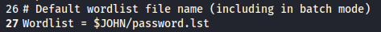
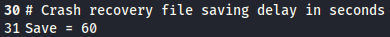
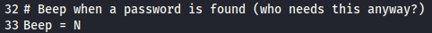
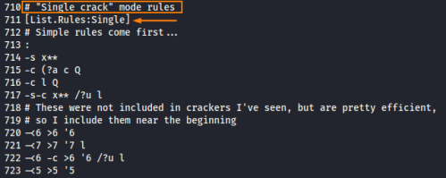
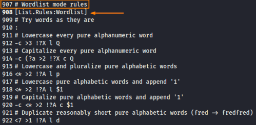
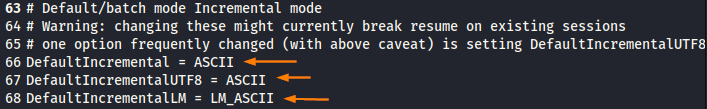
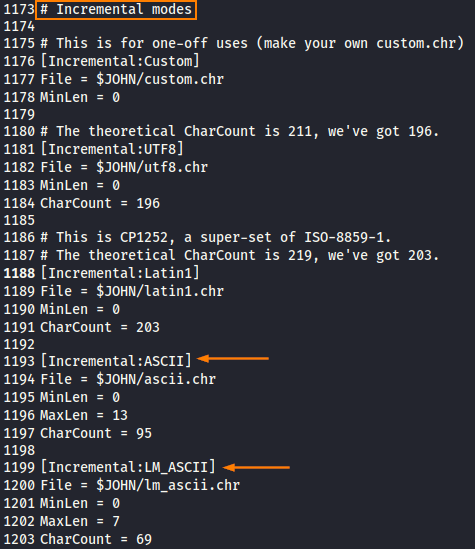
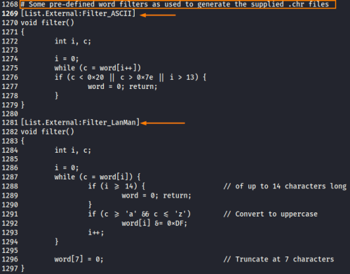

Configuration File (john.conf)
John's configuration file is stored in its run directory
◇ john.conf on Linux/UNIX
/etc/john/john.conf
/usr/share/john/john.conf
/usr/share/metasploit-framework/data/jtr/john.conf
◇ john.ini on Windows
Default Wordlist:
Frequency of saving crash recovery files (every 60 seconds by default)
Beep when a password is successfully cracked (No by default)
John support four different cracking modes: Single crack mode, Wordlist mode, Incremental mode, External mode
•
Single Crack Mode [List.Rules:Single]:
It uses variations of the user's login account name and the GECOS field (contains general informations about the account such as their real name and phone number. We can found it at the end of each record in the /etc/passwd file on Unix). Below we have the rules that John for creating guesses.
•
Wordlist mode [List.Rules:Wordlist]:
applies a dictionary attack, with the configuration file rules specifying how to hybridize dictionary words into an enormous number of additional guesses, again by appending, prepending, substituting, and shaving characters off words
•
Incremental mode:
Incremental mode is a brute force attack, but with the rules defined by default in John, this mode starts with characters that are more likely to be near each other on the keyboard, rather than a, b, c, d, and so on. Although it may look like the Incremental mode is generating random guesses, it is not. It is choosing guesses carefully based on a frequency analysis of characters actually used in passwords.
 •
External mode:
This mode enables people to write their own C code to formulate guesses
